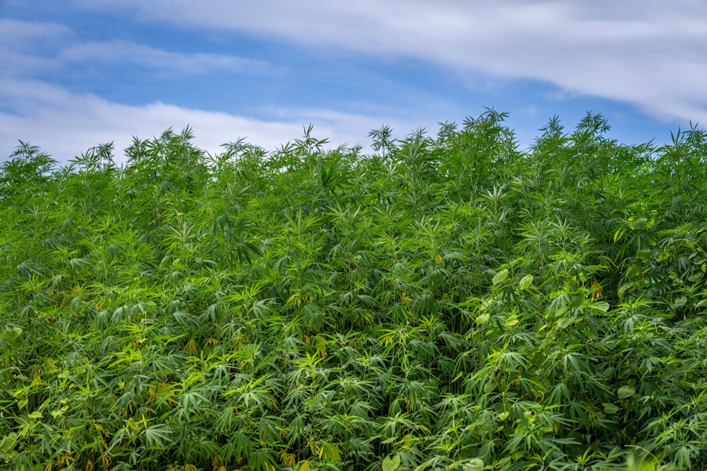

Hempcrete Homes
A carbon-NEGATIVE building material made from hemp and lime, breathable, mold-resistant, and insulating. It insulates, breathes and stores carbon. It also cannot hold your roof up.

- Hempcrete is hemp stalk mixed with lime. It insulates, breathes, resists mould and fire, and stores carbon.
- It does not hold anything up. Every hempcrete house also has a timber or steel frame doing the structural work. You are buying two systems, not one.
- It reached the model code in 2024: Appendix BL of the International Residential Code now covers hemp-lime construction, though your local authority has to have adopted the appendix.
- Turnkey builds land around $180 to $360 per square foot. Skilled crews are scarce, and scarcity is most of the price.
- In the tropics the mould and humidity behaviour is the real prize, not the insulation.
Hempcrete is the woody core of the hemp plant, called hurd, mixed with a lime binder and water and packed into walls. It breathes, it resists mould and fire, it regulates humidity in a way almost no other insulation manages, and it stores carbon for the life of the building. It also cannot carry a roof, which changes how you have to think about the whole project.
How it's built
Hemp hurd gets mixed with a lime-based binder and tamped into formwork around a load-bearing frame, or cast into blocks and laid up. Then it cures, slowly, absorbing carbon dioxide from the air as the lime carbonates.
The frame is the part people miss. Hempcrete is infill and enclosure. The structure is timber post-and-beam or light-gauge steel, and it goes up first. Here is what a finished wall actually contains:
What it really costs
Turnkey hempcrete homes run roughly $180 to $360 per square foot of conditioned floor area. Wall assemblies alone are quoted anywhere from $18 to $150 per square foot of wall, a spread so wide it tells you something.
What it tells you is that this is a labour market, not a materials market. Hemp and lime are cheap. Placing them is slow, and crews who have done it before are rare. In a region with trained installers the price behaves; everywhere else you are paying someone to learn.
Then add the frame. You are funding a structural system and an insulation system, where a concrete or ICF wall would have been one purchase. That is the honest arithmetic, and it is why hempcrete tends to appeal to owners who want the material for its own sake rather than for its budget.
Hempcrete finally got a code
For years the practical obstacle was not physics but paperwork. No code, no permit, no mortgage.
That changed with the 2024 International Residential Code, which added Appendix BL, Hemp Lime (Hempcrete) Construction. A recognised prescriptive path now exists, which is exactly what banks and building officials need before they say yes.
One caveat that matters more than the headline: IRC appendices are optional. They only apply where a jurisdiction has specifically adopted them. Before you design around Appendix BL, ask your local building department in writing whether they have adopted it. In Panama and Costa Rica, which do not use the IRC, expect to engineer and justify the wall from first principles.
The trade-offs
| Factor | Rating | Notes |
|---|---|---|
| Cost | 🔴 | Premium; limited suppliers; needs a frame |
| Sustainability | 🟢 | Carbon-NEGATIVE, sequesters CO2 |
| Insulation | 🟢 | Excellent, breathable |
| Moisture/mold | 🟢 | Regulates humidity, resists mold, rare for insulation |
| Fire | 🟢 | Naturally fire-resistant |
| Structural | 🔴 | Not load-bearing, must have a frame |
| Heat/climate fit | 🟡 | Insulation matters less in the tropics than temperate |
| Permitting/finance | 🟡 | Improving; still non-standard in many codes |
How hard is it to build?
Placing hempcrete is forgiving work. Two harder questions sit either side of it.
First, supply. Can you source hemp hurd and the correct lime binder locally, at a sane price and lead time? In much of Latin America the answer is currently no, and importing hurd is shipping air.
Second, the frame. You still need a builder who can execute a proper timber post-and-beam or steel structure. That is the part that has to be right.
Now the tropical question, answered plainly. Hempcrete's famous virtue is insulation, and insulation matters far more in a Canadian winter than a Panamanian afternoon. Near the equator the thermal argument gets weaker.
But its second virtue gets stronger. Hempcrete manages moisture and resists mould, and it does so passively, by breathing rather than by sealing. In a climate that turns most insulation into a science experiment, a wall that handles humidity instead of trapping it is a genuinely rare thing. If you are drawn to hempcrete here, that should be why, not the R-value.
For the same breathable, earth-based instinct with a supply chain that already exists in the region, look at cob or guadua, and the full method index puts them side by side.
Want the hemp wall? Start with the frame.
A hempcrete house is a structural project wearing an insulation coat, so the first conversation is about the frame, the binder supply and the local permit path. Send us the plot and we will tell you what is realistically sourceable where you are building.
See 2026 build costs in Panama →Frequently asked questions
Is hempcrete strong enough to build a house?
Not on its own, hempcrete is non-structural. It's used as insulating infill or blocks around a load-bearing frame (typically timber), so a hempcrete house always has a separate structural system doing the load-carrying.
Is hempcrete really carbon-negative?
Usually, but the claim deserves a footnote. Hemp absorbs CO2 as it grows and the lime reabsorbs CO2 as it cures. Making the lime in the first place releases CO2, so the net figure depends on the binder formulation and on how the accounting treats biogenic carbon. Most credible assessments still land negative. Treat headline numbers from suppliers with the usual caution.
Can you get a permit for a hempcrete house?
Far more easily than a few years ago. The 2024 International Residential Code added Appendix BL for hemp-lime construction, which gives officials and lenders a recognised path. The limitation is that IRC appendices only apply where a jurisdiction has adopted them, so confirm with your local building department before designing around it.
Does hempcrete work in humid climates?
Hempcrete is breathable and regulates humidity, and it resists mold, which is unusual and valuable for insulation in humid climates. The main caveat is that thermal insulation is less critical in hot-wet tropics than in cold climates, so you're buying it more for moisture behavior than heat savings.
Sources and verification
Figures in this guide were checked against code and industry sources on 3 September 2026. Immigration, tax, and cost figures change, so always confirm the current rules with the official body or a licensed professional before acting.
- ICC Digital Codes, 2024 IRC Appendix BL, Hemp Lime (Hempcrete) Construction
- Mr Hemp House, turnkey hempcrete cost per square foot
- loveproperty.com, hempcrete as an eco building material